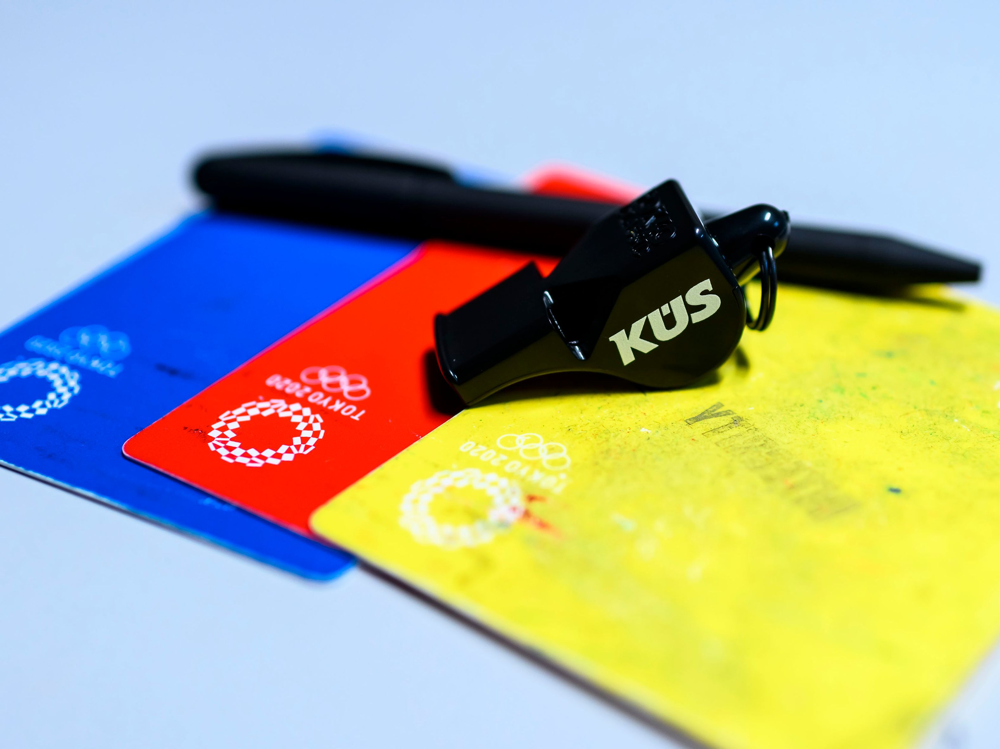

Bestrafungen
Im Handball gibt es verschiedene Bestrafungen. Diese reichen von einer Verwarung bis zu einer blauen Karte. Die Bestrafung ist abhängig vom Regelbruch.
- Gelbe Karte(Verwarnung): Bei vergehen gegen den Körper
- 2-Minuten: Bei groben Regelverstoß. 2-Minuten ist eine Zeitstrafe in welcher der bestrafte Spieler für 2-Minuten vom Spiel aussetzen muss. 2 Gelbe Karten ergeben eine 2-Minuten Strafe.
-
Rote Karte(Disqualifikation): Bei besonders groben Fouls, bei denen die Gesundheit des Gegenspielers gefährdet ist. Bei einer Disqualifikation muss der Spieler vom Feld und
seine Manschaft ist für 2 Minuten in Unterzahl. 3 2-Minuten-Strafen ergeben 1 rote Karte.
-
Blaue Karte(Hinausstellung): Bei extremer Unsporttlichkeit wie: Schiedsrichter beleidigen, Absichtliche Körperverletzung usw. Als Folge kann man für mehrere Spiele gesperrt werden.
-
Freiwurf/Ballwechsel: Bei schritten, doppelt(erneutes prellen nachdem man aufgehört hat) und Regelverstößen von der Angriffsmanschaft.
-
7-Meter: Wenn einem Angreifer eine klare Torchance genommen wird durch ein Foul oder etwas anderem, bekommt die Angreifende Manschaft einen 7-Meter. Ein 7-Meter ist wie ein 11-Meter beim Fußball.